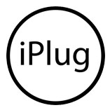

iPlug 2 is a simple-to-use C++ framework for developing cross platform audio plug-ins/apps and targeting multiple plug-in APIs with the same minimalistic code. It abstracts an audio plug-in (IPlug) and it's drawing engine/GUI toolkit (IGraphics). IGraphics contains a collection of common controls well suited for audio plug-in GUIs, either using bitmap or vector graphics. The original version of iPlug was developed by John Schwartz aka schwa and released in 2008 as part of Cockos' WDL library. iPlug 2 (2018) is a substantial reworking that brings multiple vector graphics backends (including GPU accelerated options and HiDPI/scaling), a better approach to concurrency, support for distributed plug-in formats and compiling to WebAssembly via emscripten, amongst many other things. iPlug 2 targets the VST2, VST3, AudioUnit and AAX (Native) and the Web Audio Module (WAM) plug-in APIs. It can also produce standalone win32/macOS apps with audio and MIDI I/O, as well as Reaper extensions.
| .h file | .cpp file |  | ||||
| IPlugEffect | IPlugEffect.h | IPlugEffect.cpp | WebGL | Canvas | macOS | win64 | macOS | win64 | macOS |
| IPlugInstrument | IPlugInstrument.h | IPlugInstrument.cpp | WebGL | Canvas | macOS | win64 | macOS | win64 | macOS |
| IPlugControls | IPlugControls.h | IPlugControls.cpp | WebGL | Canvas | macOS | win64 | macOS | win64 | macOS |
| IPlugFaustDSP | IPlugFaustDSP.h | IPlugFaustDSP.cpp | WebGL | Canvas | macOS | win64 | macOS | win64 | macOS |
| IGraphicsTest | IGraphicsTest.h | IGraphicsTest.cpp | WebGL | Canvas | macOS | win64 | ||
| IGraphicsStressTest | IGraphicsStressTest.h | IGraphicsStressTest.cpp | WebGL | Canvas | macOS | win64 |